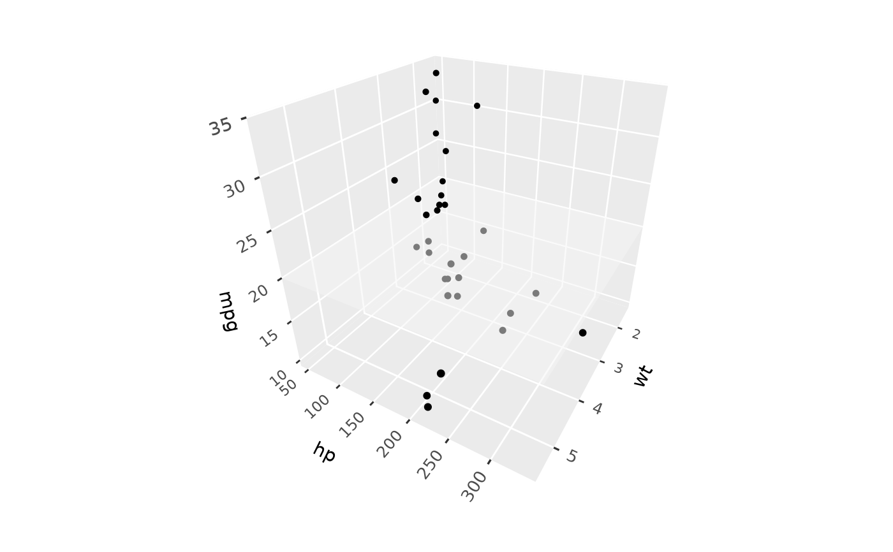
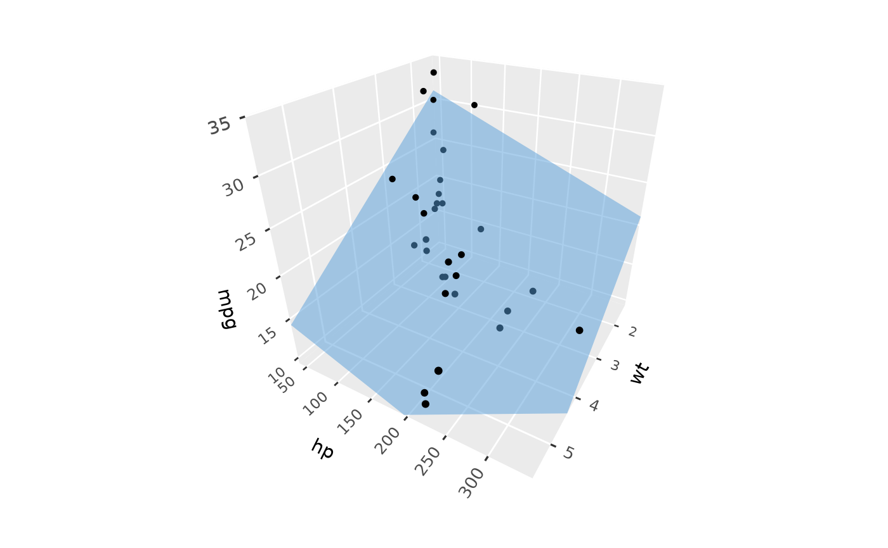
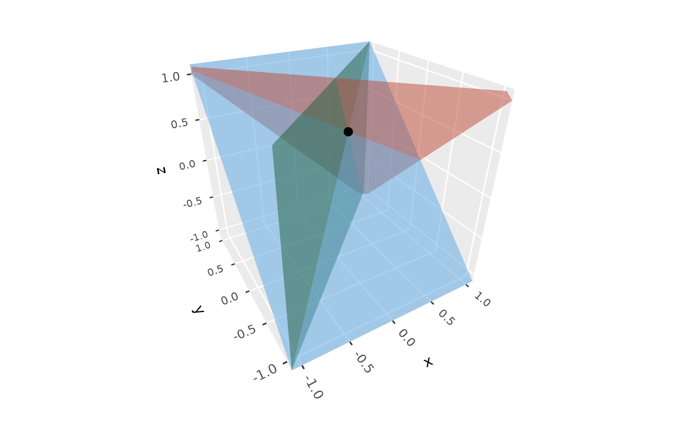
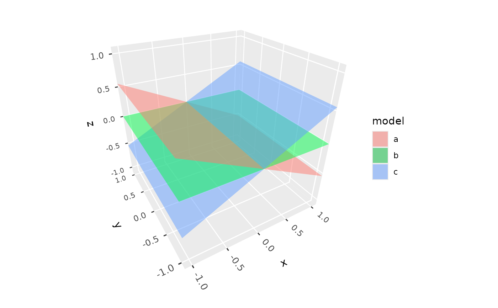

geom_plane_3d() draws planes clipped to the panel, such as reference
planes at a fixed value of one variable, a fitted regression plane, or the
planes of a system of linear equations. Like ggplot2::geom_hline(), it
can draw planes given as parameters, or planes mapped from data.
Usage
geom_plane_3d(
mapping = NULL,
data = NULL,
...,
xintercept,
yintercept,
zintercept,
intercept,
slope_x,
slope_y,
a,
b,
c,
d,
light = NULL,
scale_depth = TRUE,
on_top = FALSE,
na.rm = FALSE,
show.legend = NA,
inherit.aes = FALSE
)Arguments
- mapping
Set of aesthetic mappings created by
aes(), mapping the coefficientsintercept,slope_x, andslope_y, ora,b,c, andd. Used only when no coefficients are given as parameters.- data
The data to be displayed in this layer.
- ...
Other arguments passed on to
layer(), such as aesthetics likefill,alpha,colour(the outline, none by default),linewidth, andlinetype.- xintercept, yintercept, zintercept
Positions of planes perpendicular to the x, y, or z axis.
- intercept, slope_x, slope_y
Coefficients of regression planes
z = intercept + slope_x * x + slope_y * y.- a, b, c, d
Coefficients of planes
a * x + b * y + c * z = d.- light
A lighting specification object created by
light(),light("none")or the string"none"to disable lighting, orNULLto inherit plot-level lighting. Set plot-level lighting by addinglight()to the plot, and layer-specific lighting via thelightargument ofgeom_*_3d()functions, which takes precedence.- scale_depth
Controls depth-based scaling, drawing closer elements larger or thicker and farther ones smaller or thinner.
TRUE(the default) applies full scaling andFALSEdisables it; a number sets the strength directly, where1matchesTRUE,0matchesFALSE, values below 1 subdue the effect and values above 1 exaggerate it. This affects the layer only; usecoord_3d(scale_depth = )for panel and axis components.- on_top
If
TRUE, the layer is drawn on top of the rest of the scene instead of being depth-sorted with it, so other geometry never hides or cuts it, e.g. to keep labels legible. The layers drawn on top are depth-sorted among themselves. DefaultFALSE.- na.rm
If
FALSE, planes with missing coefficients are removed with a warning.- show.legend
Logical indicating whether this layer should be included in legends. Planes given as parameters are never included.
- inherit.aes
If
TRUE, combine the plot's default aesthetics withmapping. Defaults toFALSE, since planes rarely share the plot's aesthetics.
Plane forms
Planes can be given in one of three forms:
xintercept,yintercept, orzintercept: planes perpendicular to an axis, e.g.yintercept = 2for the planey = 2. Only one of the three can be used per layer. This form can only be given as parameters, not mapped, since it would otherwise affect the axis's range.intercept,slope_x,slope_y: the planez = intercept + slope_x * x + slope_y * y, as from a linear model. Any of the three left out defaults to0.a,b,c,d: the general forma * x + b * y + c * z = d. Requiresa,b, andc(not all zero);ddefaults to0.
Given as parameters, values can be vectors to draw several planes, along
with styling parameters of the same length. In the general form, for
example, a, b, c can be the columns of a matrix A and d the
right-hand side of the linear system A x = d. To draw planes from a data
frame instead, map the coefficients of the regression or general form in
aes(). Each layer uses one form.
Rendering
Planes are built from the panel's limits when the plot is drawn, so they don't expand the plot's axis ranges; a plane that misses the panel entirely is skipped with a warning. They are depth-sorted with the rest of the scene, split where they intersect other polygons, lit from whichever side faces the viewer, and never removed by back-face culling. Points, segments, lines, and text lying exactly in a plane are drawn on top of it.
Coefficients are in the plot's (transformed) scale space: with
scale_x_log10(), for example, xintercept = 2 is the plane at x = 100.
Aesthetics
geom_plane_3d() understands the following aesthetics: a, b, c,
d, intercept, slope_x, slope_y (see above), fill, alpha,
colour, linewidth, and linetype.
Examples
# Reference planes through a point cloud
p <- ggplot(mtcars, aes(wt, hp, mpg)) +
geom_point_3d() +
coord_3d(yaw = 120)
p + geom_plane_3d(zintercept = 20)

# A fitted regression plane
fit <- lm(mpg ~ wt + hp, data = mtcars)
b <- coef(fit)
p + geom_plane_3d(intercept = b[1], slope_x = b["wt"], slope_y = b["hp"],
fill = "steelblue")

# The planes of a linear system, meeting at its solution
A <- rbind(c(1, 1, 1), c(1, -1, 0), c(0, 1, -1))
ggplot() +
geom_plane_3d(a = A[, 1], b = A[, 2], c = A[, 3], d = c(1, 0, 0),
fill = c("tomato", "seagreen", "steelblue")) +
geom_point_3d(aes(x, y, z), data = data.frame(x = 1/3, y = 1/3, z = 1/3),
size = 3) +
lims(x = c(-1, 1), y = c(-1, 1)) + zlim(-1, 1) +
coord_3d()

# Planes mapped from data, with a fill scale
planes <- data.frame(slope_x = c(-0.5, 0, 0.5), model = c("a", "b", "c"))
ggplot() +
geom_plane_3d(aes(slope_x = slope_x, fill = model), data = planes) +
lims(x = c(-1, 1), y = c(-1, 1)) + zlim(-1, 1) +
coord_3d()
